Creating Your First Project
-
Select Projects / Add New from the sidebar on the left.
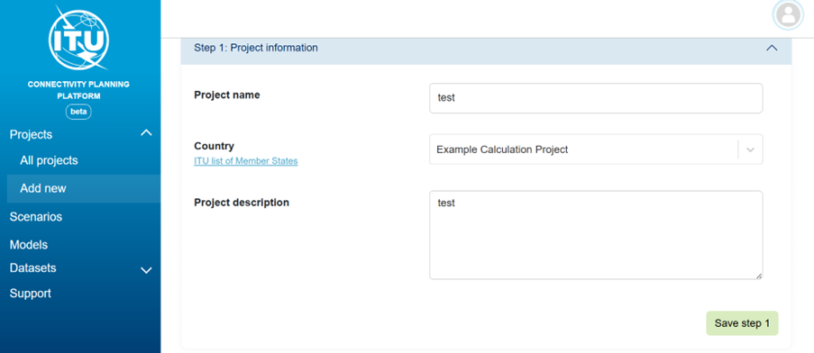
-
Enter the Project Name.
-
Select the Country (For your first example project, use Example Calculation Project instead of a specific country).
-
Add a Project Description.
-
Press Save (Step 1).
-
Select a Scenario.
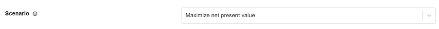
-
Select Models.
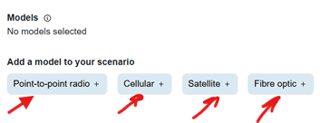
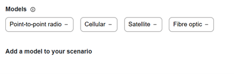
-
Save (Step 2).
-
Select Datasets (e.g., Example Mobile Coverage, Example Fibre Nodes, Example Cellular Sites, Example Points of Interest).
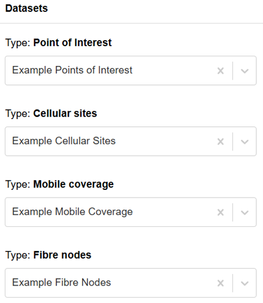
-
Save (Step 3).
-
Start the calculation.
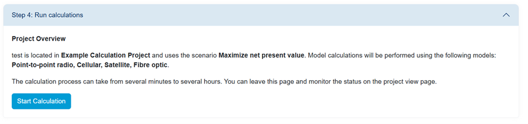
-
Go to All Projects.
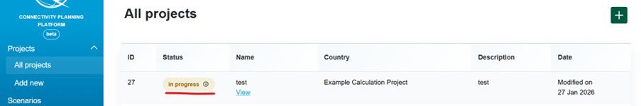
-
View your new project running. The calculation will take approximately 6-7 minutes.
-
Select View.
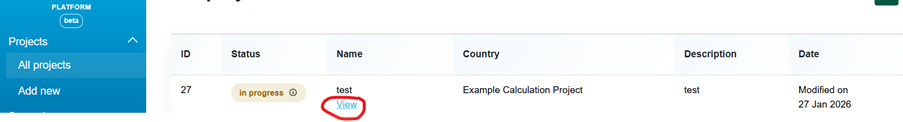
-
Once the calculation is complete, review the results.
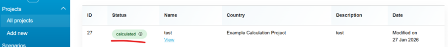
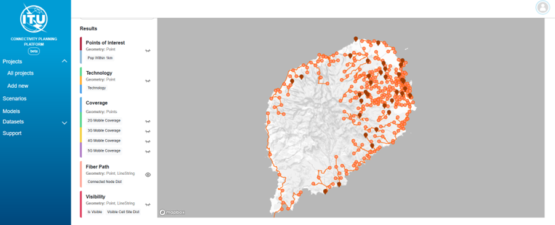
-
Note
If the project status is not updated in 7 minutes, you may need to (1) click on "All Projects" and (2) click on "View" again to refresh the screen.
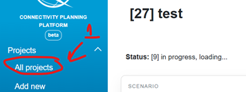
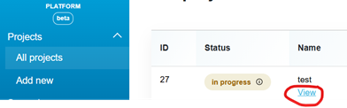